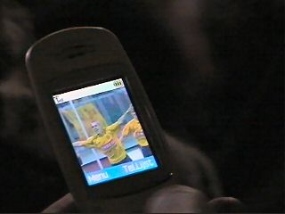

|
Roda JC - Willem II (6-1) 20 maart 2004 |
Willem II is een koninklijke club en bij Roda JC
staat de J voor Juliana. Vanwege het overlijden
van prinses Juliana is er daarom 1 minuut stilte.
Evenals verleden seizoen bleken de "kruiken"
klasse supporters te zijn die gedurende de hele
wedstrijd hun team aanmoedigden.

D'r tillefoon van der Roger Kollemans.
Roda combineerde zeldzaam goed. In de 30e min.
leidde dit tot een mooi doelpunt van Kone: 1-0.
Van Dijk gaat een vrijetrap nemen en schiet de
bal hoog in: 2-0 (39'). Foto: FotoFashion 2000
Meer foto's op Vladan Kujovic Online
Foto: FotoFashion 2000
Wederom een vreugdevol moment nadat Senden
uit een scrimmage 3-0 heeft gescoord (45').
Foto: FotoFashion 2000
In de tweede helft gaat het feest door. Redan
schiet tegen de harde wind in een poeier binnen.
Het staat zomaar 4-0! (52').
Zelden speelde een nieuweling zich zo snel en zo
duidelijk in de basis; 3 wedstrijden, 3 goals!
Foto: FotoFashion 2000
D. Mathijssen scoort tegen na een zeer snelle
en sluwe uitbraak: 4-1 (56').
Arouna Kone in duel.
Kevin van Dessel pikt zijn goaltje mee: 5-1 (73').
Een gele rookbom op west....
Na Cristiano, komen Elberkani en Colinet voor
resp. Kone, Van Dessel en Sonko.
Elberkani staat 4 minuten in het veld en scoort
6-1 (87'). Foto: FotoFashion 2000
Vrolijkheid in Z16.
Roda wint van een directe concurrent voor
Europees voetbal.
Yooo....
Het was gezellig in de K.O. die helaas al na een
klein uurtje leegliep.
Iwan Redan kijkt belangstellend toe hoe de
doorgewinterde BAF-survivor het vocht op de
ideale drinktemperatuur controleert.

Love is in the air.....
46 ;-)
Naast Iwan, was ook Sven Vandenbroeck in de
Kick-Off.
Janientjuh zat ruim een halfuur te
wachten op de verlossende sleutel.
Ondanks de hevige rukwinden bleef deze
krantenjongen tot middernacht actief....

Deze keer bierden wij af in het stadje
Treebeek, waar we niet alleen beneveld
raakten van het allerlaatste biertje maar
ook van al het fraais aan de wand.